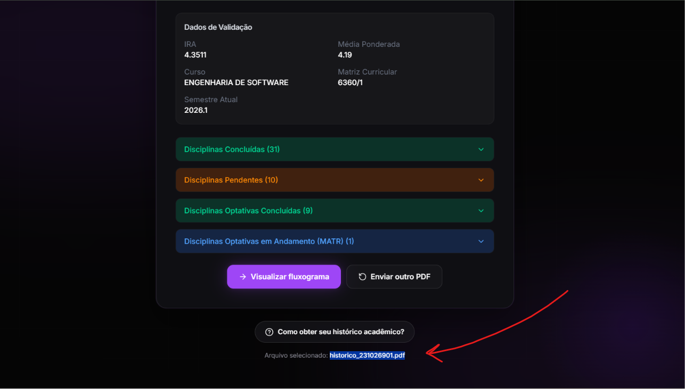
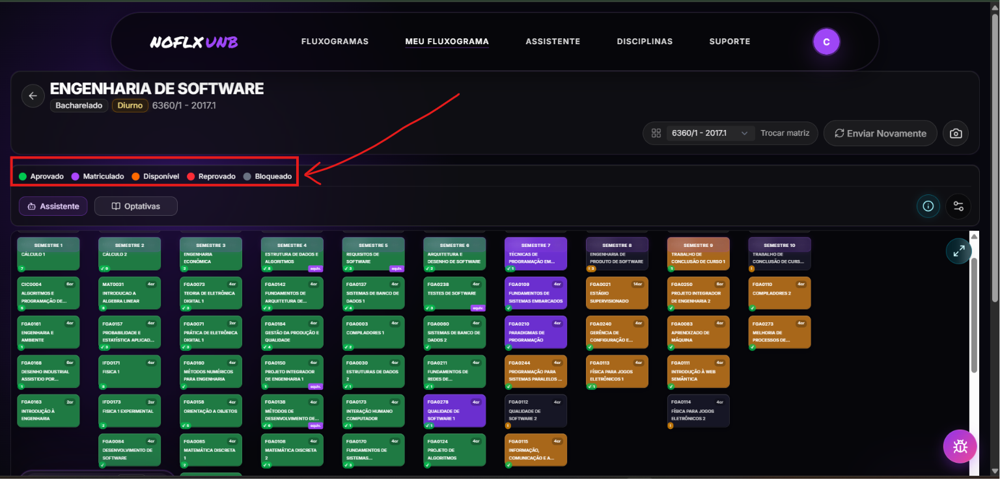
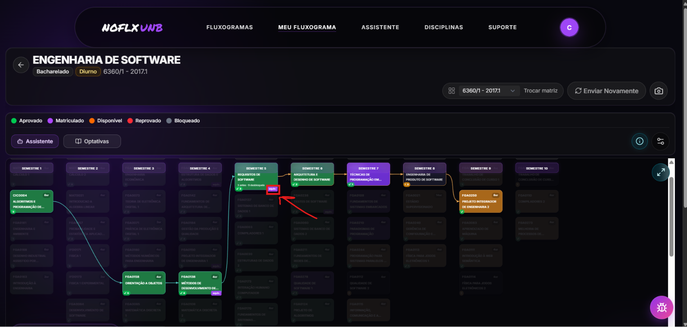
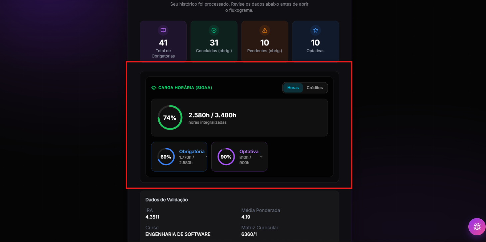
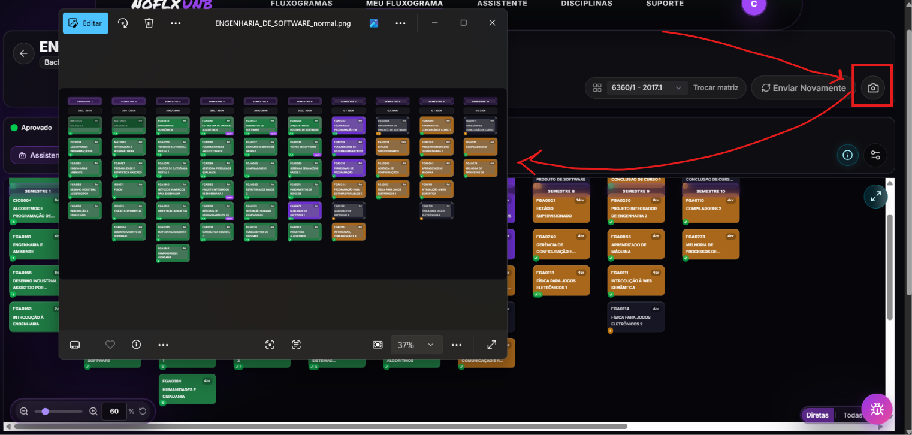
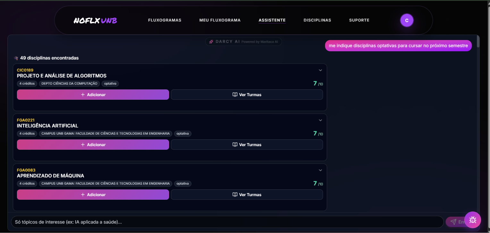

Evidência da CRF¶
1. Critério de Avaliação¶
Os requisitos foram obtidos do documento documentacao/planejamento/Requivitos/requisitos.md, no commit ba6db878b9dfa36fb034916612c4cf58ddf43475. A avaliação abrange os 15 requisitos funcionais de primeiro nível. Requisitos com implementação parcial foram classificados como ausentes/incorretos, em conformidade com o método definido na Fase 3.
1.1 Atomicidade dos requisitos¶
Parte dos requisitos agrega mais de um comportamento verificável. Essa estrutura limita a objetividade da classificação binária, pois um mesmo requisito pode reunir capacidades implementadas e não implementadas.
| Requisito | Capacidades agregadas |
|---|---|
| RF05 | Mostrar o fluxograma, destacar disciplinas cursadas, apresentar equivalências e informar tentativas ou reprovações |
| RF07 | Calcular e exibir IRA e média ponderada |
| RF08 | Identificar e exibir horas complementares cumpridas e pendentes |
| RF11 | Armazenar dados do usuário e simulações anteriores |
| RF12 | Exibir semestres cursados e restantes com base no tempo máximo |
| RF13 | Identificar ocorrência, quantidade e períodos de trancamento |
| RF14 | Identificar mudança de curso, curso anterior, data e disciplinas aproveitadas |
| RF15 | Recomendar cursos e disciplinas com base em interesse, histórico e preferências |
Tabela 1 - Exemplos de requisitos funcionais não atômicos. Fonte: Caio Duarte e Gabriel Flores, 2026.
O RF05 evidencia essa limitação: a apresentação do fluxograma, o destaque das disciplinas cursadas e a exibição das equivalências possuem evidências de implementação, enquanto a quantidade de tentativas ou reprovações permanece ausente. Como a unidade de contagem da CRF é o requisito completo, o RF05 foi classificado como ausente/incorreto.
O cálculo foi mantido sobre os 15 requisitos de primeiro nível para preservar a rastreabilidade com as Fases 2 e 3. A medida resultante representa, portanto, a proporção de requisitos integralmente atendidos. Uma medição baseada em capacidades atômicas exigiria a revisão prévia da especificação e produziria um denominador distinto.
2. Matriz de Rastreabilidade¶
| ID | Requisito resumido | Situação | Evidências principais | Justificativa |
|---|---|---|---|---|
| RF01 | Login e salvamento de simulações | Implementado | auth.service.ts; fluxograma.store.svelte.ts; supabase-data.service.ts; Figura 1 |
Há autenticação por senha e Google, além da persistência do fluxograma e do planejamento do usuário. |
| RF02 | Upload de histórico em PDF | Implementado | upload-historico/+page.svelte; FileDropzone.svelte; pdfParser.ts; Figura 2 |
A interface aceita arquivos PDF, valida o formato e inicia seu processamento. |
| RF03 | Identificar disciplinas cursadas, aprovadas e reprovadas | Implementado | pdfDataExtractor.ts; pdfParser.ts; user.ts; Figuras 2 e 3 |
O parser extrai as disciplinas e preserva situações acadêmicas como APR, CUMP, REP, REPF e REPMF. |
| RF04 | Consultar fluxograma e equivalências no banco | Implementado | supabase-data.service.ts; upload.service.ts; fluxograma.service.ts; Figura 4 |
Há consultas ao Supabase para matrizes, componentes curriculares, pré-requisitos, equivalências e procedimentos de correspondência. |
| RF05 | Mostrar fluxograma, cursadas, equivalências e quantidade de tentativas/reprovações | Ausente/incorreto | SubjectCard.svelte; SubjectDetailsModal.svelte; rotas meu-fluxograma; Figuras 3 e 4 |
O fluxograma, as situações acadêmicas e as equivalências são exibidos, mas não há contagem de tentativas ou reprovações. |
| RF06 | Calcular e exibir porcentagem de conclusão | Implementado | upload.service.ts; ProgressSummarySection.svelte; Figura 5 |
O percentual é calculado e apresentado no resumo de progresso. |
| RF07 | Calcular e exibir IRA e média ponderada | Implementado | pdfDataExtractor.ts; ProcessingResults.svelte; ProgressSummarySection.svelte; Figura 6 |
Os dois indicadores são extraídos e apresentados na interface. |
| RF08 | Exibir horas complementares cumpridas e pendentes | Implementado | integralizacao.service.ts; CargaHorariaDashboard.svelte |
A integralização distingue a carga horária realizada, exigida e pendente, incluindo a categoria complementar. |
| RF09 | Gerar PDF da simulação | Ausente/incorreto | screenshot.ts; FluxogramaHeader.svelte; ScreenshotChoiceModal.svelte; Figura 7 |
A funcionalidade disponível captura e exporta a simulação em PNG, e não em PDF. |
| RF10 | Simular troca de curso e aproveitamento | Implementado | MudancaCursoModal.svelte; rota meu-fluxograma/[courseName]; integralizacao.service.ts; Figura 8 |
Há seleção do curso de destino e recálculo da integralização com base nas equivalências. |
| RF11 | Armazenar dados do usuário e simulações anteriores | Implementado | supabase-data.service.ts; latest_init_from_export.sql |
O estado atual é atualizado em dados_users, e cada envio pode ser registrado em historicos_usuarios. |
| RF12 | Exibir semestres cursados e restantes pelo tempo máximo | Ausente/incorreto | pdfDataExtractor.ts; ProgressSummarySection.svelte |
O semestre atual é extraído e exibido, mas não há cálculo dos semestres restantes nem utilização do prazo máximo do curso. |
| RF13 | Identificar e exibir trancamentos | Ausente/incorreto | pdfDataExtractor.ts; uploadStore.ts; supabase-data.service.ts |
Os períodos de suspensão são extraídos e armazenados, porém não são apresentados ao usuário. |
| RF14 | Identificar mudança de curso ocorrida e aproveitamentos | Ausente/incorreto | user.ts; supabase-data.service.ts; componentes de fluxograma |
Não foram identificados campos ou fluxo funcional para registrar o curso anterior, a data da mudança e os componentes aproveitados em uma mudança já ocorrida. |
| RF15 | Recomendação de cursos e disciplinas baseada em interesse, histórico e preferências | Ausente/incorreto | assistente/+page.svelte; assistente.service.ts; assistente-ui.service.ts; Figura 9 |
O assistente recomenda disciplinas e recebe a mensagem e a matriz curricular, mas não contempla a recomendação de cursos nem o uso conjunto do histórico e de preferências persistidas. |
Tabela 2 - Matriz de rastreabilidade dos requisitos funcionais. Fonte: Caio Duarte e Gabriel Flores, 2026.
3. Evidências Visuais¶
Os registros visuais abaixo complementam a inspeção do código-fonte. Uma mesma imagem foi associada a mais de um requisito somente quando apresenta comportamentos verificáveis de ambos.
3.1 RF01 — Login¶
A captura comprova a disponibilização da interface de autenticação. A persistência das simulações, que completa o RF01, é sustentada pelas evidências de código indicadas na matriz.
3.2 RF02 e RF03 — Upload e processamento do histórico¶

O nome do arquivo .pdf selecionado comprova o fluxo de upload do RF02. Os agrupamentos de disciplinas concluídas, pendentes, optativas concluídas e matriculadas complementam a evidência da identificação de situações acadêmicas exigida pelo RF03.
3.3 RF03 e RF05 — Situações no fluxograma¶

A captura demonstra a apresentação visual das disciplinas conforme sua situação. Ela comprova parte do RF05, mas não apresenta o número de tentativas ou reprovações; por isso, o requisito permanece classificado como ausente/incorreto.
3.4 RF04 e RF05 — Equivalências¶

A imagem evidencia que as equivalências consultadas são representadas no fluxograma. No RF04, a comprovação da consulta ao banco é complementada pelo código-fonte; no RF05, a imagem comprova apenas uma das capacidades agregadas.
3.5 RF06 — Porcentagem de conclusão¶

O painel apresenta a conclusão geral de 74%, calculada a partir de 2.580 das 3.480 horas do curso, além do detalhamento das cargas obrigatória e optativa.
3.6 RF07 — IRA e média ponderada¶

A captura apresenta os dois indicadores exigidos pelo RF07: IRA de 4,3511 e média ponderada de 4,19.
3.7 RF09 — Formato da exportação¶

A imagem funciona como evidência de não conformidade: o botão de captura gera o arquivo ENGENHARIA_DE_SOFTWARE_normal.png, enquanto o RF09 exige um relatório em PDF.
3.8 RF10 — Simulação de mudança de curso¶
A ferramenta apresentada permite iniciar a simulação de mudança de curso. O cálculo do aproveitamento é complementado pelas evidências de implementação listadas na matriz.
3.9 RF15 — Assistente de recomendação¶

A captura comprova a recomendação de disciplinas e a possibilidade de adicioná-las. Entretanto, não demonstra recomendação de cursos nem o uso conjunto do histórico e de preferências persistidas, mantendo o RF15 como ausente/incorreto.
4. Cálculo¶
| Classificação | Quantidade |
|---|---|
| Implementado | 9 |
| Ausente/incorreto | 6 |
| Total | 15 |
5. Limitações¶
A matriz registra a presença e a aderência estática das funcionalidades. A disponibilidade operacional dessas capacidades depende de validação ponta a ponta em ambiente integrado, com banco de dados e serviços externos devidamente configurados.
A presença de requisitos compostos reduz a precisão da CRF. A decomposição em requisitos atômicos, com identificadores e critérios de aceitação independentes, é necessária para distinguir atendimento integral, parcial e ausente com menor grau de subjetividade.
Histórico de Versões¶
| Versão | Data | Descrição | Autor(es) |
|---|---|---|---|
| 1.0 | 11/06/2026 | Registro da matriz de rastreabilidade e cálculo da CRF | Caio Duarte |
| 1.1 | 11/06/2026 | Inclusão da análise de atomicidade dos requisitos funcionais | Caio Duarte |
| 1.2 | 12/06/2026 | Associação das evidências visuais aos requisitos funcionais | Caio Duarte |